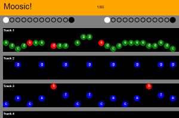

Showcase for HTML5 web apps

A quick and dirty prototype of a music track editor, built in one day using HTML5 + jQuery.
Click on the black bars to add notes, click on the large coloured circles to choose different octaves.
Note: Only works in lastest versions of Chrome, Firefox or Safari.